zensols.deeplearn.model package¶
Submodules¶
zensols.deeplearn.model.analyze¶
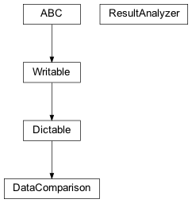
Analysis tools to compare results.
-
class
zensols.deeplearn.model.analyze.DataComparison(key, previous, current, compare_df)[source]¶ Bases:
zensols.config.dictable.DictableContains the results from two runs used to compare. The data in this object is used to compare the validation loss from a previous run to a run that’s currently in progress. This is provided along with the performance metrics of the runs when written with
write().-
__init__(key, previous, current, compare_df)¶ Initialize self. See help(type(self)) for accurate signature.
-
compare_df: pandas.core.frame.DataFrame¶ A dataframe with the validation loss from the previous and current results and that difference.
-
current: zensols.deeplearn.result.domain.ModelResult¶ The current results, which is probably a model currently running.
-
key: str¶ The results key used with a
ModelResultManager.
-
previous: zensols.deeplearn.result.domain.ModelResult¶ The previous resuls of the model from a previous run.
-
write(depth=0, writer=<_io.TextIOWrapper name='<stdout>' mode='w' encoding='utf-8'>)[source]¶ Write this instance as either a
Writableor as aDictable. If class attribute_DICTABLE_WRITABLE_DESCENDANTSis set asTrue, then use thewrite()method on children instead of writing the generated dictionary. Otherwise, write this instance by first creating adictrecursively usingasdict(), then formatting the output.If the attribute
_DICTABLE_WRITE_EXCLUDESis set, those attributes are removed from what is written in thewrite()method.Note that this attribute will need to be set in all descendants in the instance hierarchy since writing the object instance graph is done recursively.
-
-
class
zensols.deeplearn.model.analyze.ResultAnalyzer(executor, previous_results_key, cache_previous_results)[source]¶ Bases:
objectLoad results from a previous run of the
ModelExecutorand a more recent run. This run is usually a currently running model to compare the results during training. This might provide meaningful information such as whether to early stop training.-
__init__(executor, previous_results_key, cache_previous_results)¶ Initialize self. See help(type(self)) for accurate signature.
-
cache_previous_results: bool¶ If
True, globally cache the previous results to avoid having to reload each time.
-
property
comparison¶ Load the results data and create a comparison instance read to write or jsonify.
- Return type
-
property
current_results¶ Return the current results (see class docs).
- Return type
-
executor: zensols.deeplearn.model.executor.ModelExecutor¶ The executor (not the running executor necessary) that will load the results if not already loadded.
-
property
previous_results¶ Return the previous results (see class docs).
- Return type
-
zensols.deeplearn.model.batchiter¶
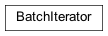
Contains a class to assist in the batch loop during training, validation and testing.
-
class
zensols.deeplearn.model.batchiter.BatchIterator(executor, logger)[source]¶ Bases:
objectThis class assists in the batch loop during training, validation and testing. Any special handling of a model related to its loss function can be overridden in this class.
-
_decode_outcomes(outcomes)[source]¶ Transform the model output (and optionally the labels) that will be added to the
EpochResult, which composes aModelResult.This implementation returns :py:meth:~`Tensor.argmax`, which are the indexes of the max value across columns.
- Return type
-
__init__(executor, logger)¶ Initialize self. See help(type(self)) for accurate signature.
-
executor: dataclasses.InitVar[typing.Any]¶ The owning executor.
-
iterate(model, optimizer, criterion, batch, epoch_result, split_type)[source]¶ Train, validate or test on a batch. This uses the back propogation algorithm on training and does a simple feed forward on validation and testing.
One call of this method represents a single batch iteration
- Parameters
model (
BaseNetworkModule) – the model to excerciseoptimizer (
Optimizer) – the optimization algorithm (i.e. adam) to iteratecriterion – the loss function (i.e. cross entropy loss) used for the backward propogation step
batch (
Batch) – contains the data to test, predict, and optionally the labels for training and validationepoch_result (
EpochResult) – to be populated with the results of this epoch’s runsplit_type (
DatasetSplitType) – indicates if we’re training, validating or testing
- Return type
- Returns
the singleton tensor containing the loss
-
logger: logging.Logger¶ The status logger from the executor.
-
zensols.deeplearn.model.executor¶
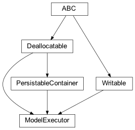
This file contains the network model and data that holds the results.
-
class
zensols.deeplearn.model.executor.ModelExecutor(config_factory, config, name, model_name, model_settings, net_settings, dataset_stash, dataset_split_names, result_path=None, update_path=None, intermediate_results_path=None, progress_bar=False, progress_bar_cols=None)[source]¶ Bases:
zensols.persist.annotation.PersistableContainer,zensols.persist.dealloc.Deallocatable,zensols.config.writable.WritableThis class creates and uses a network to train, validate and test the model. This class is either configured using a
ConfigFactoryor is unpickled withModelManager. If the later, it’s from a previously trained (and possibly tested) state.Typically, after creating a nascent instance,
train()is called to train the model. This returns the results, but the results are also available via theResultManagerusing themodel_managerproperty. To load previous results, useexecutor.result_manager.load().During training, the training set is used to train the weights of the model provided by the executor in the
model_settings, then validated using the validation set. When the validation loss is minimized, the following is saved to disk:Settings:
net_settings,model_settings,the model weights,
the results of the training and validation thus far,
the entire configuration (which is later used to restore the executor),
random seed information, which includes Python, Torch and GPU random state.
After the model is trained, you can immediately test the model with
test(). To be more certain of being able to reproduce the same results, it is recommended to load the model withmodel_manager.load_executor(), which loads the last instance of the model that produced a minimum validation loss.- See
- See
- See
zensols.deeplearn.model.ModelSettings
-
ATTR_EXP_META= ('model_settings',)¶
-
__init__(config_factory, config, name, model_name, model_settings, net_settings, dataset_stash, dataset_split_names, result_path=None, update_path=None, intermediate_results_path=None, progress_bar=False, progress_bar_cols=None)¶ Initialize self. See help(type(self)) for accurate signature.
-
property
batch_iterator¶ The train manager that assists with the training process.
- Return type
-
property
batch_stash¶ The stash used to obtain the data for training and testing. This stash should have a training, validation and test splits. The names of these splits are given in the
dataset_split_names.- Return type
-
config: zensols.config.configbase.Configurable¶ The configuration used in the configuration factory to create this instance.
-
config_factory: zensols.config.factory.ConfigFactory¶ The configuration factory that created this instance.
-
property
criterion_optimizer_scheduler¶ Return the loss function and descent optimizer.
-
dataset_split_names: List[str]¶ train, validation, test (see
_get_dataset_splits())- Type
The list of split names in the
dataset_stashin the order
-
dataset_stash: zensols.dataset.stash.DatasetSplitStash¶ The split data set stash that contains the
BatchStash, which contains the batches on which to train and test.
-
property
feature_stash¶ The stash used to generate the feature, which is not to be confused with the batch source stash``batch_stash``.
- Return type
-
intermediate_results_path: pathlib.Path = None¶ If this is set, then save the model and results to this path after validation for each training epoch.
-
load()[source]¶ Clear all results and trained state and reload the last trained model from the file system.
- Return type
Module- Returns
the model that was loaded and registered in this instance of the executor
-
property
model¶ Get the PyTorch module that is used for training and test.
- Return type
-
property
model_exists¶ Return whether the executor has a model.
- Return type
- Returns
Trueif the model has been trained or loaded
-
property
model_manager¶ Return the manager used for controlling the train of the model.
- Return type
-
model_settings: zensols.deeplearn.domain.ModelSettings¶ The configuration of the model.
-
net_settings: zensols.deeplearn.domain.NetworkSettings¶ The settings used to configure the network.
-
predict(batches)[source]¶ Create predictions on ad-hoc data.
-
progress_bar_cols: int = None¶ The number of console columns to use for the text/ASCII based progress bar.
-
property
result_manager¶ Return the manager used for controlling the life cycle of the results generated by this executor.
- Return type
-
result_path: pathlib.Path = None¶ If not
None, a path to a directory where the results are to be dumped; the directory will be created if it doesn’t exist when the results are generated.
-
set_model_parameter(name, value)[source]¶ Safely set a parameter of the model, found in
model_settings. This makes the corresponding update in the configuration, so that when it is restored (i.e for test) the parameters are consistent with the trained model. The value is converted to a string as the configuration representation stores all data values as strings.Important:
evalsyntaxes are not supported, and probably not the kind of values you want to set a parameters with this interface anyway.
-
set_network_parameter(name, value)[source]¶ Safely set a parameter of the network, found in
network_settings. This makes the corresponding update in the configuration, so that when it is restored (i.e for test) the parameters are consistent with the trained network. The value is converted to a string as the configuration representation stores all data values as strings.Important:
evalsyntaxes are not supported, and probably not the kind of values you want to set a parameters with this interface anyway.
-
property
torch_config¶ Return the PyTorch configuration used to convert models and data (usually GPU) during training and test.
- Return type
-
property
train_manager¶ Return the train manager that assists with the training process.
- Return type
-
train_production(description=None)[source]¶ Train and test the model on the training and test datasets. This is used for a “production” model that is used for some purpose other than evaluation.
- Return type
-
update_path: pathlib.Path = None¶ The path to check for commands/updates to make while training. If this is set, and the file exists, then it is parsed as a JSON file. If the file cannot be parsed, or 0 size etc., then the training is (early) stopped.
If the file can be parsed, and there is a single
epochdict entry, then the current epoch is set to that value.
-
write(depth=0, writer=<_io.TextIOWrapper name='<stdout>' mode='w' encoding='utf-8'>, include_settings=False, include_model=False)[source]¶ Write the contents of this instance to
writerusing indentiondepth.- Parameters
depth (
int) – the starting indentation depthwriter (
TextIOBase) – the writer to dump the content of this writable
zensols.deeplearn.model.facade¶
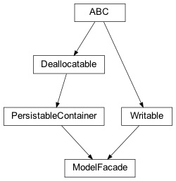
-
class
zensols.deeplearn.model.facade.ModelFacade(config, config_factory=<property object>, progress_bar=True, progress_bar_cols=None, executor_name='executor', writer=<_io.TextIOWrapper name='<stdout>' mode='w' encoding='utf-8'>)[source]¶ Bases:
zensols.persist.annotation.PersistableContainer,zensols.config.writable.WritableThis class provides easy to use client entry points to the model executor, which trains, validates, tests, saves and loads the model.
More common attributes, such as the learning rate and number of epochs, are properties that dispatch to
executor. For the others, go directly to the property.-
SINGLETONS= {}¶
-
__init__(config, config_factory=<property object>, progress_bar=True, progress_bar_cols=None, executor_name='executor', writer=<_io.TextIOWrapper name='<stdout>' mode='w' encoding='utf-8'>)¶ Initialize self. See help(type(self)) for accurate signature.
-
property
batch_metadata¶ Return the batch metadata used on the executor.
- See
zensols.deepnlp.model.module.EmbeddingNetworkSettings- Return type
-
property
batch_stash¶ The stash used to encode and decode batches by the executor.
- Return type
-
property
class_explorer¶ -
- Type
rtype
-
config: Configurable¶ The configuraiton used to create the facade, and used to create a new configuration factory to load models.
-
property
config_factory¶ The configuration factory used to create this facade, or
Noneif no factory was used.
-
configure_cli_logging(log_level=None)[source]¶ “Configure command line (or Python REPL) debugging. Each facade can turn on name spaces that make sense as useful information output for long running training/testing iterations.
This calls “meth:_configure_cli_logging to collect the names of loggers at various levels.
-
static
configure_default_cli_logging(log_level=30)[source]¶ Configure the logging system with the defaults.
-
configure_jupyter(log_level=30, progress_bar_cols=120)[source]¶ Configures logging and other configuration related to a Jupyter notebook. This is just like
configure_cli_logging(), but adjusts logging for what is conducive for reporting in Jupyter cells.;param log_level: the default logging level for the logging system
- Parameters
progress_bar_cols (
int) – the number of columns to use for the progress bar
-
property
dataset_stash¶ The stash used to encode and decode batches split by dataset.
- Return type
-
debug(debug_value=True)[source]¶ Debug the model by setting the configuration to debug mode and invoking a single forward pass. Logging must be configured properly to get the output, which is typically just invoking
logging.basicConfig().
-
property
executor¶ A cached instance of the executor tied to the instance of this class.
- Return type
-
executor_name: str = 'executor'¶ The configuration entry name for the executor, which defaults to
executor.
-
property
feature_stash¶ The stash used to generate the feature, which is not to be confused with the batch source stash
batch_stash.- Return type
-
static
get_encode_sparse_matrices()[source]¶ Return whether or not sparse matricies are encoded.
- See
set_sparse()- Return type
-
get_predictions(*args, **kwargs)[source]¶ Generate a Pandas dataframe containing all predictions from the test data set.
- See
- Return type
-
get_predictions_factory(column_names=None, transform=None, batch_limit=9223372036854775807, name=None)[source]¶ Generate a predictions factoty from the test data set.
- Parameters
column_names (
Optional[List[str]]) – the list of string column names for each data item the list returned fromdata_point_transformto be added to the results for each label/predictiontransform (
Optional[Callable[[DataPoint],tuple]]) – a function that returns a tuple, each with an element respective ofcolumn_namesto be added to the results for each label/prediction; ifNone(the default),strused (see the Iris Jupyter Notebook example)batch_limit (
int) – the max number of batche of results to outputname (
Optional[str]) – the key of the previously saved results to fetch the results, orNone(the default) to get the last result set saved
- Return type
-
get_result_analyzer(key=None, cache_previous_results=False)[source]¶ Return a results analyzer for comparing in flight training progress.
- Return type
-
property
label_attribute_name¶ Get the label attribute name.
-
property
last_result¶ The last recorded result during an
ModelExecutor.train()orModelExecutor.test()invocation is used.- Return type
-
classmethod
load_from_path(path, *args, **kwargs)[source]¶ Construct a new facade from the data saved in a persisted model file. This uses the
ModelManager.load_from_path()to reconstruct the returned facade, which means some attributes are taken from default if not taken from*argsor**kwargs.- Parameters
through to the initializer of invoking class cls. (Passed) –
- Return type
- Returns
a new instance of a
ModelFacade- See
-
property
model_settings¶ Return the executor’s model settings.
- Return type
-
property
net_settings¶ Return the executor’s network settings.
- Return type
-
persist_result()[source]¶ Save the last recorded result during an
Executor.train()orExecutor.test()invocation to disk. Optionally also save a plotted graphics file to disk as well whenpersist_plot_resultis set toTrue.Note that in Jupyter notebooks, this method has the side effect of plotting the results in the cell when
persist_plot_resultisTrue.- Parameters
persist_plot_result – if
True, plot and save the graph as a PNG file to the results directory
-
plot_result(result=None, save=False, show=False)[source]¶ Plot results and optionally save and show them. If this is called in a Jupyter notebook, the plot will be rendered in a cell.
- Parameters
result (
Optional[ModelResult]) – the result to plot, or ifNone, uselast_result()save (
bool) – ifTrue, save the plot to the results directory with the same naming as the last data resultsshow (
bool) – ifTrue, invokematplotlib’sshowfunction to visualize in a non-Jupyter environment
- Return type
- Returns
the result used to graph, which comes from the executor when none is given to the invocation
-
progress_bar_cols: int = None¶ The number of console columns to use for the text/ASCII based progress bar.
-
remove_metadata_mapping_field(attr)[source]¶ Remove a field by attribute if it exists across all metadata mappings.
This is useful when a very expensive vectorizer slows down tasks, such as prediction, on a single run of a program. For this use case, override
predict()to call this method before calling the superpredictmethod.
-
property
result_manager¶ Return the executor’s result manager.
- Return type
-
static
set_encode_sparse_matrices(use_sparse=False)[source]¶ If called before batches are created, encode all tensors the would be encoded as dense rather than sparse when
use_sparseisFalse. Oherwise, tensors will be encoded as sparse where it makes sense on a per vectorizer basis.
-
stop_training()[source]¶ Early stop training if the model is currently training. This invokes the
TrainManager.stop(), communicates to the training process to stop on the next check.- Returns
Trueif the application is configured to early stop and the signal has not already been given
-
train(description=None)[source]¶ Train and test or just debug the model depending on the configuration.
-
train_production(description=None)[source]¶ Train on the training and test data sets, then test
-
property
vectorizer_manager_set¶ Return the vectorizer manager set used for the facade. This is taken from the executor’s batch stash.
- Return type
-
write(depth=0, writer=None, include_executor=True, include_metadata=True, include_settings=True, include_model=True, include_config=False, include_object_graph=False)[source]¶ Write the contents of this instance to
writerusing indentiondepth.- Parameters
depth (
int) – the starting indentation depthwriter (
Optional[TextIOBase]) – the writer to dump the content of this writable
-
write_predictions(lines=10)[source]¶ Print the predictions made during the test phase of the model execution.
- Parameters
lines (
int) – the number of lines of the predictions data frame to be printedwriter – the data sink
-
write_result(depth=0, writer=<_io.TextIOWrapper name='<stdout>' mode='w' encoding='utf-8'>, include_settings=False, include_converged=False, include_config=False)[source]¶ Load the last set of results from the file system and print them out. The result to print is taken from
last_result- Parameters
depth (
int) – the number of indentation levelswriter (
TextIOBase) – the data sinkinclude_settings (
bool) – whether or not to include model and network settings in the outputinclude_config (
bool) – whether or not to include the configuration in the output
-
zensols.deeplearn.model.manager¶
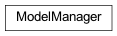
A utility class to help with a ModelExecutor life cycle.
-
class
zensols.deeplearn.model.manager.ModelManager(path, config_factory, model_executor_name=None, persist_random_seed_context=True, keep_last_state_dict=False)[source]¶ Bases:
objectThis class manages the lifecycle of an instance of a
ModelExecutor. This class is mostly used by the executor to control it’s lifecycle. However, a client can also use an instance of this to revive a model that’s been saved to disk with theModelResultManager- See ModelExecutor
-
__init__(path, config_factory, model_executor_name=None, persist_random_seed_context=True, keep_last_state_dict=False)¶ Initialize self. See help(type(self)) for accurate signature.
-
config_factory: zensols.config.factory.ConfigFactory¶ The configuration factory to be used to create the
ModelExecutor.
-
keep_last_state_dict: bool = False¶ Whether or not to store the PyTorch module state in attribute
last_saved_state_dict.
-
load_executor()[source]¶ Load the model the last saved model from the disk. This is used load an instance of a
ModelExecutorwith all previous state completely in tact. It does this by using an instance ofzensols.config.factory.Configurableand azensols.config.factory.ImportConfigFactoryto reconstruct the executor and it’s state by recreating all instances.After the executor has been recreated with the factory, the previous model results and model weights are restored.
- Return type
- Returns
an instance of
zensols.deeplearn.model.ModelExecutor- See
zensols.deeplearn.model.ModelExecutor
-
classmethod
load_from_path(path)[source]¶ Load and return an instance of this class from a previously saved model. This method exists to recreate a
ModelManagerfrom a saved file from scratch. The returned model manager can be used to create the executor orModelFacadeusing :obj:config_factory.- Parameters
path (
Path) – points to the model file persisted with_save_executor()- Return type
- Returns
an instance of
ModelManagerthat was used to save the executor pointed bypath
-
path: pathlib.Path¶ The path of where the model results saved to disk by
ModelResultManager.
zensols.deeplearn.model.meta¶
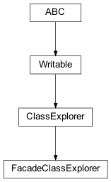
Explore the facade in memory object graph
-
class
zensols.deeplearn.model.meta.FacadeClassExplorer(*args, **kwargs)[source]¶ Bases:
zensols.config.meta.ClassExplorerA class explorer that includes interesting and noteable framework classes to print.
zensols.deeplearn.model.module¶
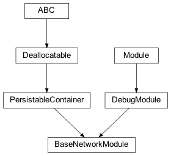
Base class PyTorch module and utilities.
-
class
zensols.deeplearn.model.module.BaseNetworkModule(net_settings, sub_logger=None)[source]¶ Bases:
zensols.deeplearn.model.module.DebugModule,zensols.persist.annotation.PersistableContainerA utility base network module that contains ubiquitous, but optional layers, such as dropout and batch layeres, activation, etc.
-
abstract
_forward(x, *args, **kwargs)[source]¶ The model’s forward implementation. Normal backward semantics are no different.
- Parameters
- Return type
-
__init__(net_settings, sub_logger=None)[source]¶ Initialize.
- Parameters
net_settings (
NetworkSettings) – contains common layers such as droput and batch normalizationsub_logger (
Optional[Logger]) – used to log activity in this module so they logged module comes from some parent model
-
property
device¶ Return the device on which the model is configured.
- Return type
device
-
static
device_from_module(module)[source]¶ Return the device on which the model is configured.
- Parameters
module (
Module) – the module containing the parameters used to get the device- Return type
device
-
abstract
-
class
zensols.deeplearn.model.module.DebugModule(sub_logger=None)[source]¶ Bases:
torch.nn.modules.module.ModuleA utility base class that makes logging more understandable.
-
DEBUG_DEVICE= False¶ If
True, add tensor devices to log messages.
-
DEBUG_TYPE= False¶ If
True, add tensor shapes to log messages.
-
MODULE_NAME= None¶ The module name used in the logging message. This is set in each inherited class.
-
zensols.deeplearn.model.optimizer¶
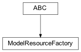
Base classes for overriding optimizers.
-
class
zensols.deeplearn.model.optimizer.ModelResourceFactory[source]¶ Bases:
abc.ABCAn abstract factory that creates either an optimizer or criteria by the
ModelExecutor. This is more of a marker class for other sub classes to be configured and created by anImportConfigFactory.
zensols.deeplearn.model.pred¶
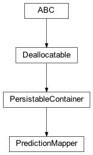
-
class
zensols.deeplearn.model.pred.PredictionMapper(datas, batch_stash)[source]¶ Bases:
zensols.persist.annotation.PersistableContainerUsed by a top level client to create features used to create instances of
DataPointand map label classes from nominal IDs to their string representations.-
_create_data_point(cls, feature)[source]¶ Create a data point. This base implementation creates it with the passed parameters.
- Parameters
cls (
Type[DataPoint]) – the data point class of which to make an instancestash – to be set as the batch stash on the data point and the caller
feature (
Any) – to be set as the third argument and generate from_create_features()
- Return type
-
__init__(datas, batch_stash)¶ Initialize self. See help(type(self)) for accurate signature.
-
batch_stash: zensols.deeplearn.batch.stash.BatchStash¶ “The batch stash used to own batches and data points created by this instance.
-
property
batches¶ Create a prediction batch that is detached from any stash resources, except this instance that created it. This creates a tuple of features, each of which is used to create a
DataPoint.- Return type
List[Batch]
-
datas: Tuple[Any]¶ The input data to create ad-hoc predictions.
-
abstract
map_results(result)[source]¶ Map ad-hoc prediction results from the
ModelExecutorto an instance that makes sense to the client.- Parameters
result (
ResultsContainer) – contains the predictions produced by the model aspredictions_raw- Return type
- Returns
a first class instance suitable for easy client consumption
-
zensols.deeplearn.model.sequence¶
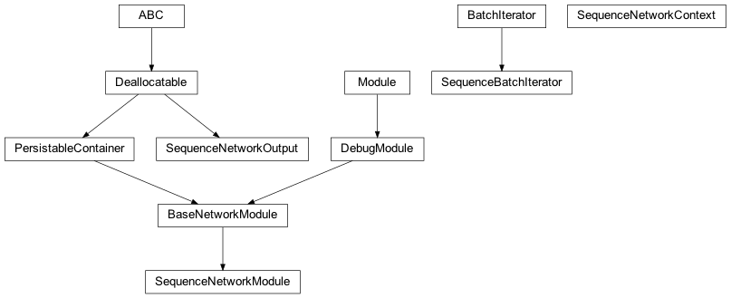
-
class
zensols.deeplearn.model.sequence.SequenceBatchIterator(executor, logger)[source]¶ Bases:
zensols.deeplearn.model.batchiter.BatchIteratorExpects outputs as a list of lists of labels of indexes. Examples of use cases include CRFs (e.g. BiLSTM/CRFs).
-
__init__(executor, logger)¶ Initialize self. See help(type(self)) for accurate signature.
-
executor: dataclasses.InitVar[typing.Any]¶
-
logger: logging.Logger¶
-
-
class
zensols.deeplearn.model.sequence.SequenceNetworkContext(split_type, criterion)[source]¶ Bases:
objectThe forward context for the
SequenceNetworkModule. This is used inSequenceNetworkModule._forward()to provide the module additional information needed to score the model and produce the loss.-
__init__(split_type, criterion)¶ Initialize self. See help(type(self)) for accurate signature.
-
criterion: torch.nn.modules.module.Module¶ The criterion used to create the loss. This is provided for modules that produce the loss in the forward phase with the :meth:`torch.nn.module.forward` method.
-
split_type: zensols.deeplearn.domain.DatasetSplitType¶ The split type, which informs the module when decoding to produce outputs or using the forward pass to prod.
-
-
class
zensols.deeplearn.model.sequence.SequenceNetworkModule(net_settings, sub_logger=None)[source]¶ Bases:
zensols.deeplearn.model.module.BaseNetworkModuleA module that has a forward training pass and a separate scoring phase. Examples include layers with an ending linear CRF layer, such as a BiLSTM CRF. This module has a
decodemethod that returns a 2D list of integer label indexes of a nominal class.The context provides additional information needed to train, test and use the module.
- See
zensols.deeplearn.layer.RecurrentCRFNetwork
-
abstract
_forward(batch, context)[source]¶ The forward pass, which either trains the model and creates the loss and/or decodes the output for testing and evaluation.
- Parameters
batch (
Batch) – the batch to train, validate or test oncontext (
SequenceNetworkContext) – contains the additional information needed for scoring and decoding the sequence
- Return type
-
class
zensols.deeplearn.model.sequence.SequenceNetworkOutput(predictions, loss=None, score=None, labels=None, outputs=None)[source]¶ Bases:
zensols.persist.dealloc.DeallocatableThe output from :clas:`.SequenceNetworkModule` modules.
zensols.deeplearn.model.trainmng¶
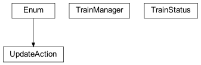
Contains a class to assist in the training of the ModelExecutor.
-
class
zensols.deeplearn.model.trainmng.TrainManager(status_logger, progress_logger, update_path, max_consecutive_increased_count)[source]¶ Bases:
objectThe class is used to assist in the training of the
ModelExecutor. It updates validation loss and helps with early stopping decisions. It also watches for a file on the file system to provide instructions on what to do in the next epoch.-
__init__(status_logger, progress_logger, update_path, max_consecutive_increased_count)¶ Initialize self. See help(type(self)) for accurate signature.
-
get_status()[source]¶ Return the epoch to set in the training loop of the
ModelExecutor.- Return type
-
progress_logger: logging.Logger¶ The logger to record progress updates during training. This is used only when the progress bar is turned off (see
ModelFacade._configure_cli_logging()).
-
status_logger: logging.Logger¶ The logger to record status updates during training.
-
stop()[source]¶ Stops the execution of training the model. Currently this is done by creating a file the executor monitors.
- Return type
- Returns
Trueif the application is configured to early stop and the signal has not already been given
-
update_loss(valid_epoch_result, train_epoch_result, ave_valid_loss)[source]¶ Update the training and validation loss.
-
update_path: pathlib.Path¶
-
zensols.deeplearn.model.wgtexecutor¶
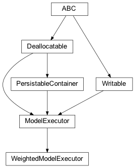
A class that weighs labels non-uniformly.
-
class
zensols.deeplearn.model.wgtexecutor.WeightedModelExecutor(config_factory, config, name, model_name, model_settings, net_settings, dataset_stash, dataset_split_names, result_path=None, update_path=None, intermediate_results_path=None, progress_bar=False, progress_bar_cols=None, weighted_split_name='train', weighted_split_path=None, use_weighted_criterion=True)[source]¶ Bases:
zensols.deeplearn.model.executor.ModelExecutorA class that weighs labels non-uniformly. This class uses invert class sampling counts to help the minority label.
-
__init__(config_factory, config, name, model_name, model_settings, net_settings, dataset_stash, dataset_split_names, result_path=None, update_path=None, intermediate_results_path=None, progress_bar=False, progress_bar_cols=None, weighted_split_name='train', weighted_split_path=None, use_weighted_criterion=True)¶ Initialize self. See help(type(self)) for accurate signature.
-
get_class_weights(**kwargs) → torch.Tensor¶ Compute invert class sampling counts to return the weighted class.
- Return type
-
get_label_statistics()[source]¶ Return a dictionary whose keys are the labels and values are dictionaries containing statistics on that label.
-
use_weighted_criterion: bool = True¶ If
True, use the class weights in the initializer of the criterion. Setting this toFalseeffectively disables this class.
-
weighted_split_path: dataclasses.InitVar[Path] = None¶ The path to the cached weithed labels.
-
Module contents¶
Classes that train, validate and test a model. The values of the
predictions are made available using
zensols.deeplearn.model.Executor.get_predictions.